《追色手记36》学习资料
柯达胶片质感调色：视频拆解与 Lightroom 实操复盘
视频标题 | 【追色手记36】柯达胶片质感？这个色调，太适合日常拍照了！ |
作者 | 摄影师聿铭 |
时长 | 约 8 分 53 秒 |
来源 | https://www.bilibili.com/video/BV1w6y1YJEUa/ |
整理日期 | 2026-05-24 |
说明：本文根据视频音频转写、画面截取与内容校对整理，保留学习所需的方法、步骤和关键截图，不包含逐字稿。
柯达胶片质感调色作品参考截图
以下为视频中前半段出现的参考图、范例图、原图或调色对照画面，用于先观察目标风格的题材、影调、肤色、环境色和整体氛围。
|
参考截图 01｜00:11 |
参考截图 02｜00:25 |
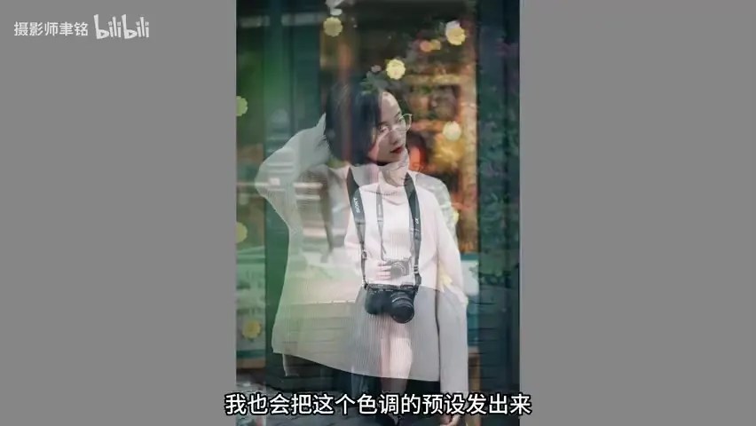 参考截图 03｜00:40 | 
参考截图 04｜00:54 |
|
参考截图 05｜01:08 | 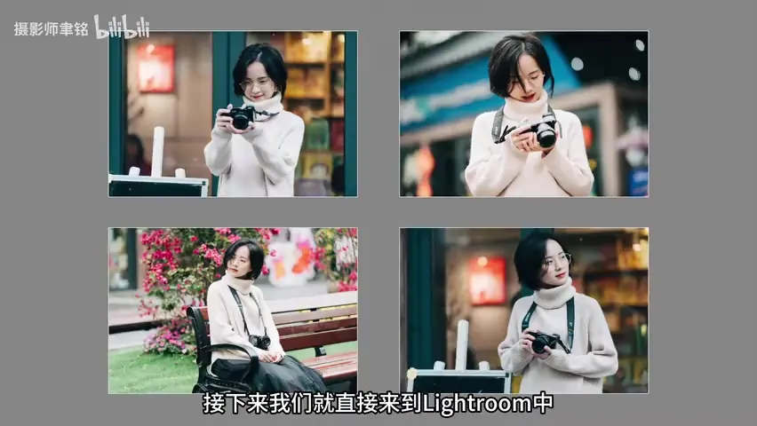 参考截图 06｜01:23 |
|
参考截图 07｜01:37 |
参考截图 08｜01:52 |
|
参考截图 09｜02:06 | 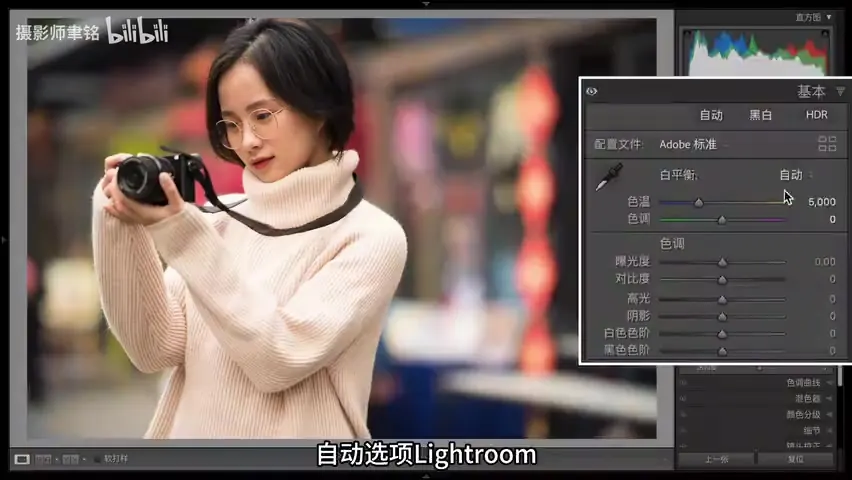 参考截图 10｜02:20 |
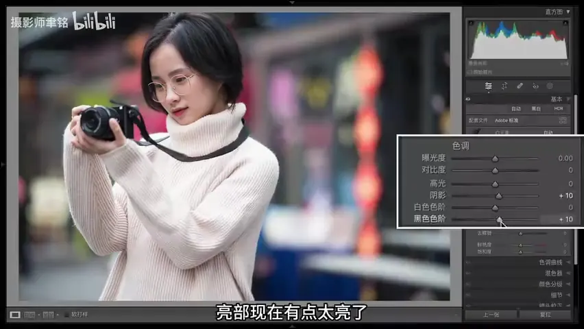 参考截图 11｜02:35 | 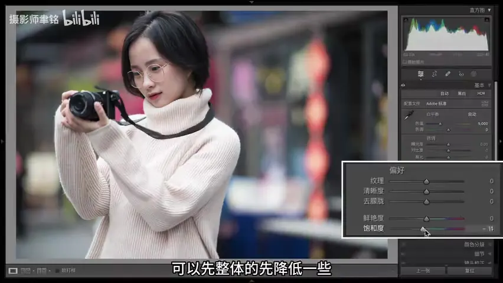 参考截图 12｜02:49 |
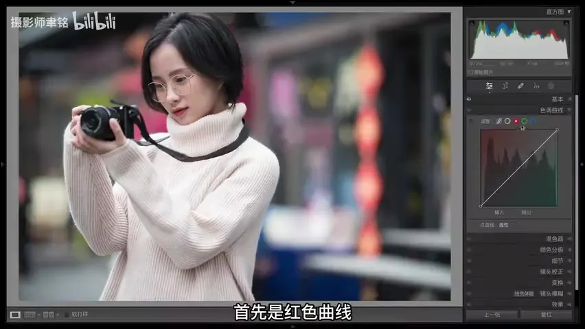 参考截图 13｜03:04 | 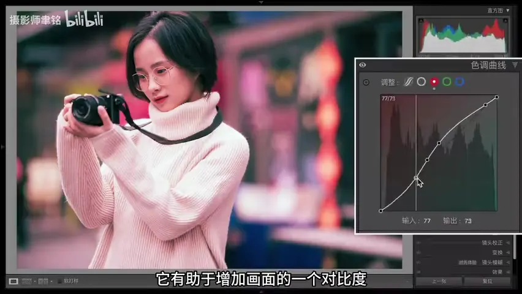 参考截图 14｜03:18 |
|
参考截图 15｜03:33 | 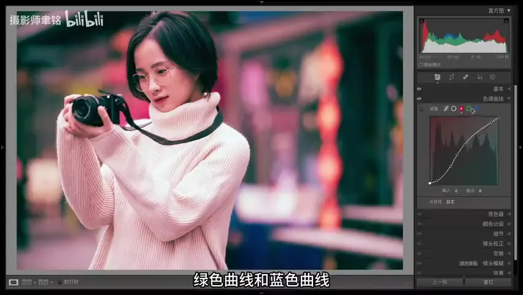 参考截图 16｜03:47 |
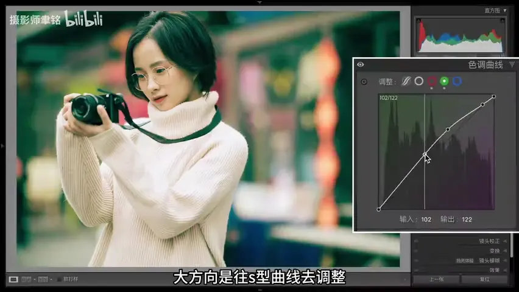 参考截图 17｜04:01 | 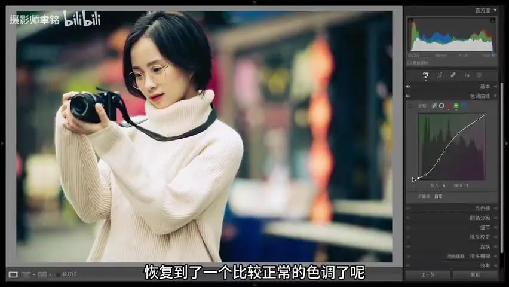 参考截图 18｜04:16 |
一页速览
风格目标 | 围绕“柯达胶片质感调色”建立一套可复盘的观察和调色流程。 |
观察顺序 | 先看参考图与素材是否匹配，再看直方图和明暗关系，最后拆肤色、环境色、冷暖关系。 |
操作顺序 | 基础面板定亮度与反差，曲线塑造影调，HSL/混色器处理主色，颜色分级/校准统一氛围，局部工具收尾。 |
学习重点 | 不要只记参数；每一步都要对应画面问题，例如偏黄、过曝、肤色脏、暗部死黑、背景颜色杂乱等。 |
学习目标
能从参考截图中判断目标风格的题材、光线、影调和主色倾向。
能把视频里的滑块操作翻译成“解决什么画面问题”的思路。
能用基础面板、曲线、HSL、校准、颜色分级和局部调整完成一轮完整复盘。
能把同一套方法迁移到自己的照片，并根据素材差异微调而不是硬套数值。
能用前后对比、直方图和参考图同屏检查最终结果是否接近目标风格。
视频要点提炼
时间 | 类型 | 内容摘记 |
00:52 | 关键讲解 | 它的色彩相对比较鲜艳 |
01:00 | 关键讲解 | 这种风格对于人的肤色是非常友好的 |
01:07 | 关键讲解 | 同时它又具有胶片的那种对比明显 |
01:49 | 关键讲解 | 这其实是白平衡不够准所导致的 |
02:02 | 关键讲解 | 相机的一个白平衡 |
02:07 | 关键讲解 | 不过好在白平衡的问题 |
02:16 | 关键讲解 | 找到白平衡 |
02:21 | 关键讲解 | lightroom它会自动的对照片的白平衡 |
02:26 | 关键讲解 | 可以把阴影黑色色阶稍微的提亮一点 |
05:52 | 关键讲解 | 它的肤色饱和度是相对比较高的 |
06:13 | 关键讲解 | 然后把饱和度和明亮度都降下来 |
07:43 | 关键讲解 | 高光、阴影都适当的去提亮 |
Lightroom 复盘流程
参考图观察：先截取作品参考、原图与成片对比，判断画面属于清新、胶片、电影感、夜景、街拍、人像或风光中的哪一种。
基础面板：调整曝光、对比、高光、阴影、白色和黑色，让素材进入可调状态；这一步解决明暗和层次，不急着追求最终颜色。
曲线塑形：用曲线控制黑白端、中间调和整体反差；胶片感通常会抬黑或压白，电影感常强调暗部和高光的关系。
颜色控制：用 HSL/混色器拆解肤色、天空、绿植、衣服和背景；重点只动影响画面的主色，不把所有颜色都调一遍。
统一氛围：用校准、颜色分级、色温色调和少量局部工具统一冷暖关系，让画面不散、不脏、不互相打架。
局部收尾：处理脸部、天空、窗口、高光边缘、暗部噪点和主体突出度，最后和参考图同屏复查。
关键截图与讲解
图 01 | 00:32 | 关键画面
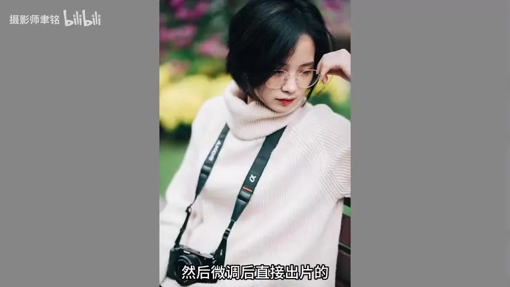
学习要点：懂思路的调色才有灵魂
图 02 | 00:54 | 关键画面
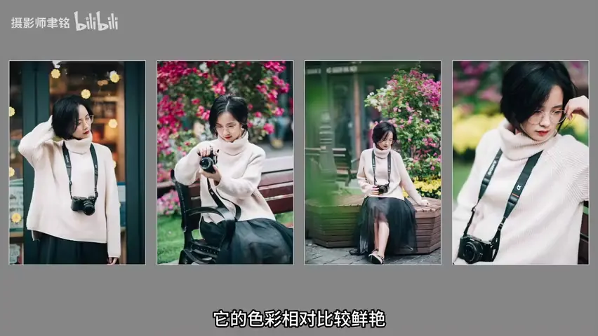
学习要点：懂思路的调色才有灵魂
图 03 | 01:16 | 关键画面
学习要点：懂思路的调色才有灵魂
图 04 | 01:38 | 关键画面
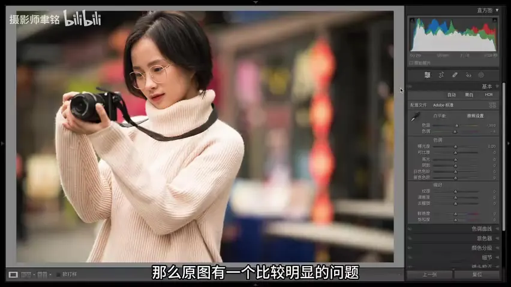
学习要点：懂思路的调色才有灵魂
图 05 | 02:00 | 关键画面
学习要点：懂思路的调色才有灵魂
图 06 | 02:22 | 关键画面
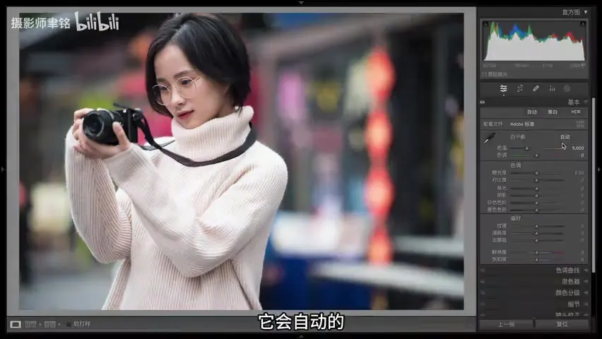
学习要点：懂思路的调色才有灵魂
图 07 | 02:44 | 关键画面
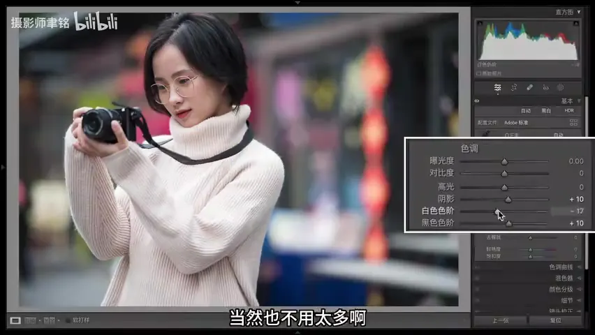
学习要点：懂思路的调色才有灵魂
图 08 | 03:07 | 关键画面
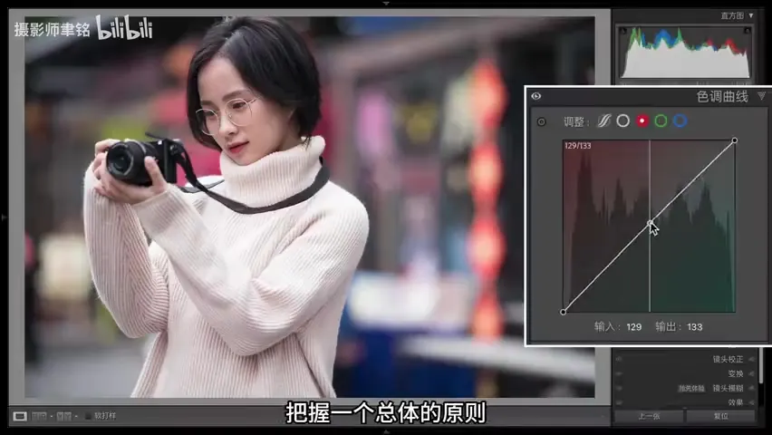
学习要点：懂思路的调色才有灵魂
图 09 | 03:29 | 关键画面
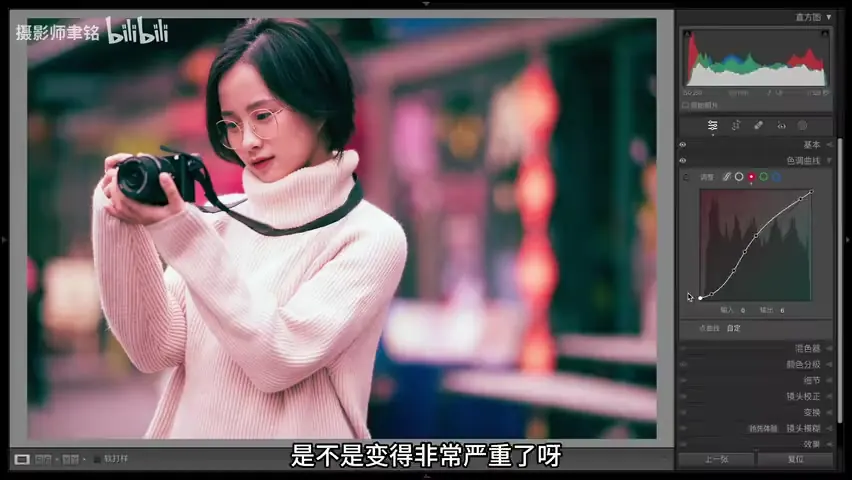
学习要点：懂思路的调色才有灵魂
图 10 | 03:51 | 关键画面
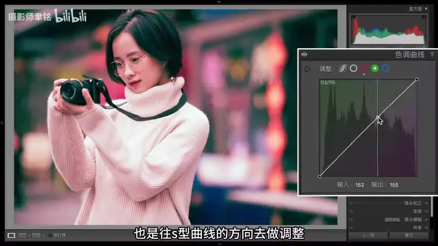
学习要点：懂思路的调色才有灵魂
图 11 | 04:13 | 关键画面
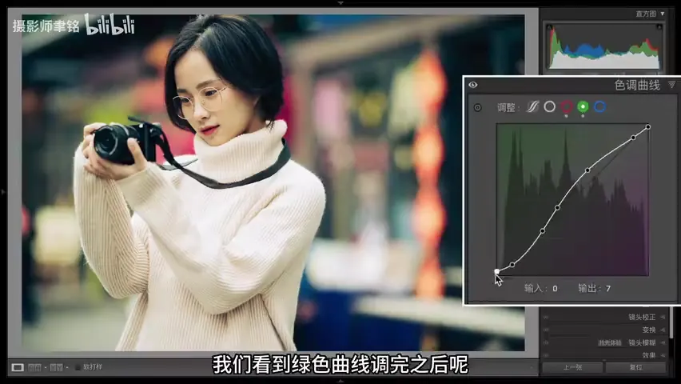
学习要点：懂思路的调色才有灵魂
图 12 | 04:35 | 关键画面
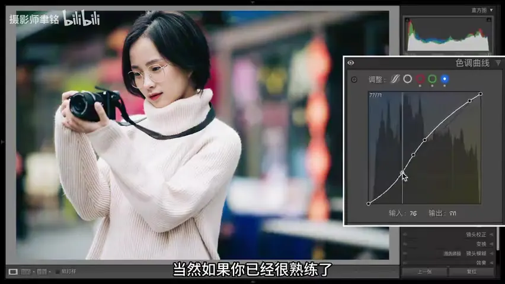
学习要点：懂思路的调色才有灵魂
图 13 | 04:57 | 关键画面
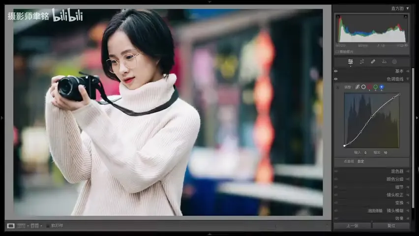
学习要点：懂思路的调色才有灵魂
图 14 | 05:19 | 关键画面
学习要点：懂思路的调色才有灵魂
图 15 | 05:41 | 关键画面
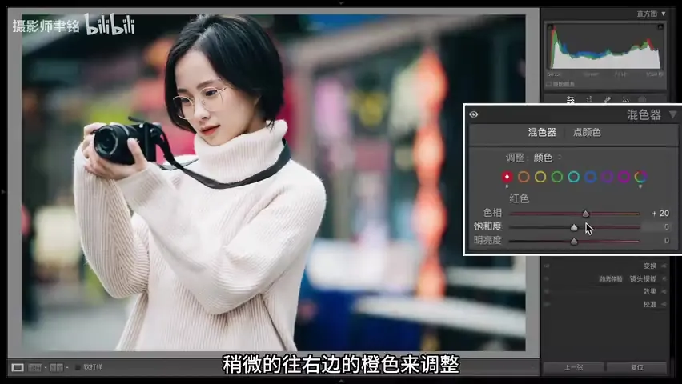
学习要点：懂思路的调色才有灵魂
图 16 | 06:03 | 关键画面
学习要点：懂思路的调色才有灵魂
图 17 | 06:25 | 关键画面
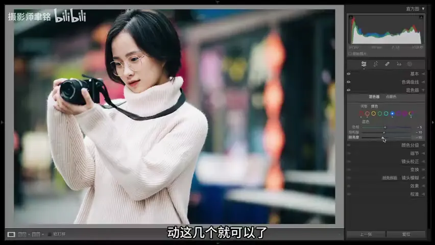
学习要点：懂思路的调色才有灵魂
图 18 | 06:47 | 关键画面
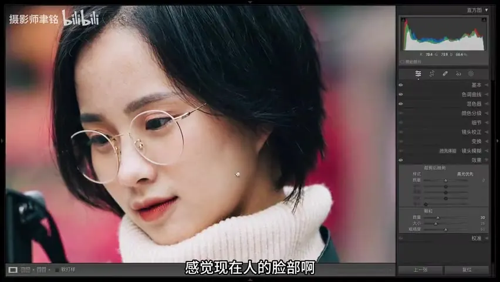
学习要点：懂思路的调色才有灵魂
图 19 | 07:09 | 关键画面
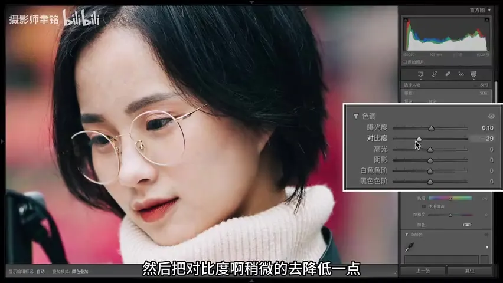
学习要点：懂思路的调色才有灵魂
图 20 | 07:32 | 关键画面
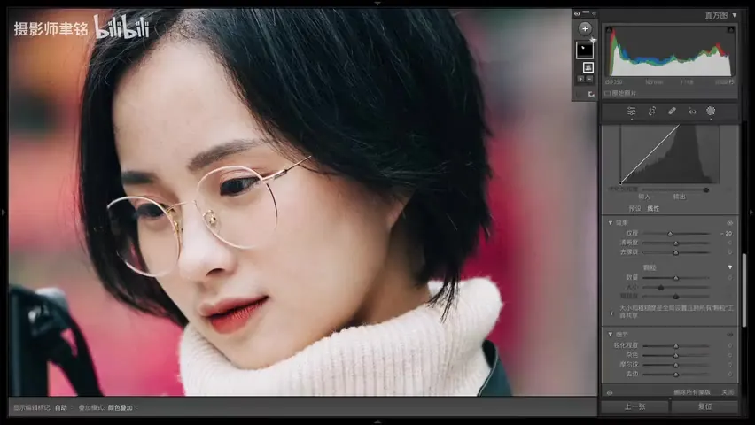
学习要点：懂思路的调色才有灵魂
图 21 | 07:54 | 关键画面
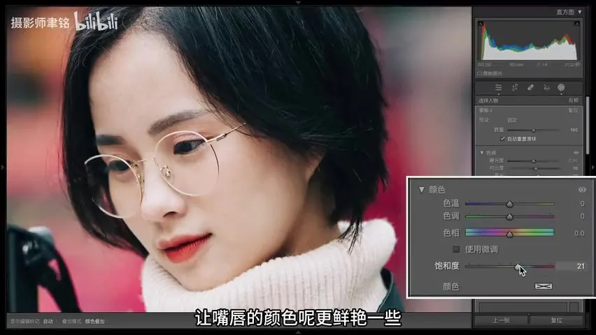
学习要点：懂思路的调色才有灵魂
图 22 | 08:16 | 关键画面
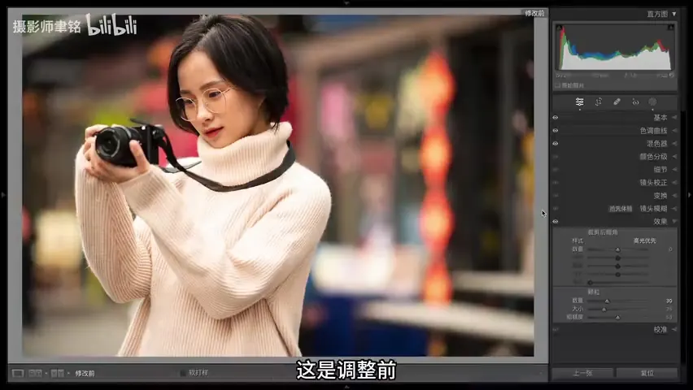
学习要点：懂思路的调色才有灵魂
练习任务
找一张和《追色手记36》题材接近的照片，先写下目标风格的三个关键词。
截取 3-5 张参考图，同屏观察肤色、暗部、高光和背景色，不先动参数。
只用基础面板完成第一版，确认曝光、高光、阴影和黑白场没有明显问题。
用曲线建立主要影调，再用 HSL/混色器处理最重要的 2-3 个颜色。
完成后把原图、成片、参考图并排检查，记录最有效的三个操作。
复盘清单
检查项 | 通过标准 |
参考匹配 | 题材、光线和拍摄场景与参考风格足够接近。 |
影调 | 暗部、高光、中间调关系明确，不是单纯拉亮或压暗。 |
肤色 | 肤色符合风格方向，同时不发脏、不偏灰、不失真。 |
环境色 | 背景颜色统一，主色明确，杂色被压住。 |
质感 | 清晰度、纹理、降噪、颗粒和暗角符合目标气质。 |
迁移 | 换一张同组照片后，只需微调曝光和局部即可成立。 |
时间轴速查
时间 | 模块 | 重点 |
00:00-01:07 | 模块 1 | 懂思路的调色才有灵魂；各位朋友大家好；我是摄影师郁鸣 |
01:07-02:13 | 模块 2 | 同时它又具有胶片的那种对比明显；质感突出的特点；所以我们在日常的随拍 |
02:13-03:20 | 模块 3 | 找到白平衡；然后选择这里面的自动选项；lightroom它会自动的对照片的白平衡 |
03:20-04:26 | 模块 4 | 而胶片摄影它的对比度是相对比较高的；红色曲线调整后；画面整体偏色是不是变得非常严重了 |
04:26-05:33 | 模块 5 | 即使我们不调整曲线；我们通过其他的参数的调整；也是完全可以达到一个类似的效果的 |
05:33-06:40 | 模块 6 | 我希望嘴唇稍微偏橙色一点点；所以呢可以把红色的色相；稍微的往右边的橙色来调整 |
06:40-07:46 | 模块 7 | 一般我们胶片拍出来的照片；它的上面的颗粒感还是会有一些的对不对；感觉现在人的脸部好像还不是太光滑细腻 |
07:46-08:53 | 模块 8 | 饱和度可以再适当的加一些；让嘴唇的颜色更鲜艳一些；好,这样就OK了 |
全部图片
本页共保留 40 张来自 Word 的图片。上方正文中已按文档顺序展示，这里作为总览索引。